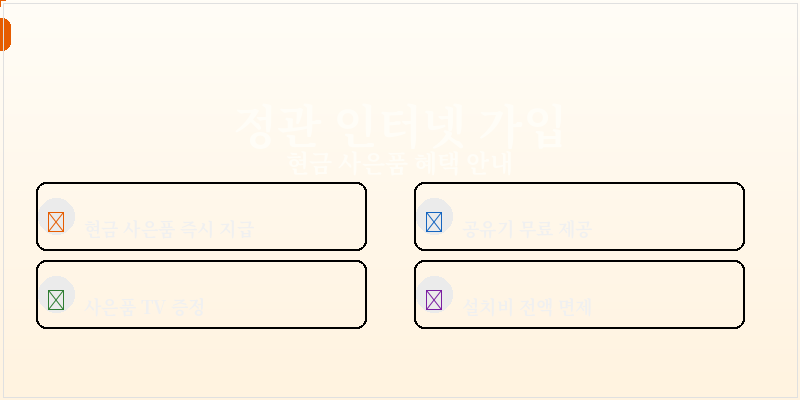
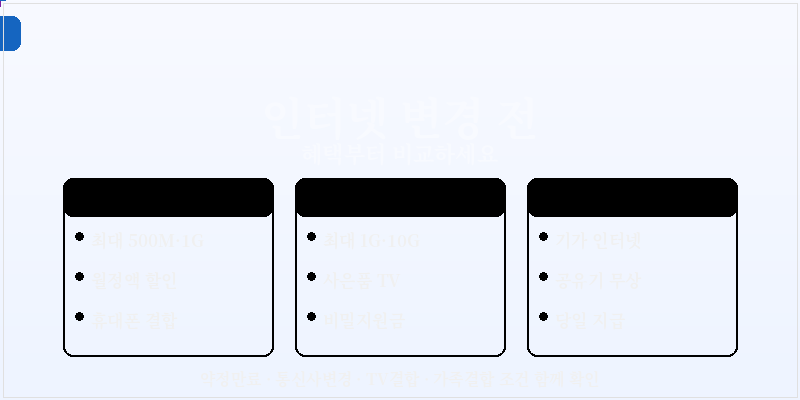

정관 인터넷가입 현금 사은품, 변경 전에 혜택부터 비교해보세요
정관 인터넷가입 현금 사은품을 알아볼 때는 단순히 큰 금액만 보고 결정하기보다 우리 집 사용 패턴에 맞는 통신사, 월요금, TV 결합, 설치 일정, 지급 조건을 함께 보는 것이 좋습니다. 같은 정관 지역이라도 신규 가입인지 인터넷변경인지, 기존 약정이 끝났는지, 휴대폰 결합이 가능한지에 따라 실제 혜택은 달라질 수 있습니다.
많은 분들이 정관 인터넷가입 사은품 많이주는곳을 먼저 찾지만, 상담을 받아보면 단순 현금 지급만큼 중요한 것이 있습니다. 설치 완료 후 언제 받을 수 있는지, TV를 함께 가입했을 때 혜택이 얼마나 달라지는지, 공유기나 셋톱박스 임대 조건이 월요금에 어떻게 반영되는지까지 확인해야 합니다. 올딜은 이런 부분을 기준으로 정관 인터넷가입 혜택비교가 필요한 분들에게 보기 쉬운 방향을 잡아주는 페이지입니다.

정관 인터넷변경은 약정만료 시점이 중요합니다
기존 인터넷 약정이 끝나가고 있다면 그냥 재약정을 선택하기 전에 통신사 변경 혜택도 같이 확인해보는 것이 좋습니다. 정관 인터넷변경은 SK, KT, LG 중 어떤 통신사를 사용 중인지, 가족 휴대폰이 어디에 묶여 있는지, 인터넷 단독인지 TV 결합인지에 따라 결과가 달라집니다. 특히 인터넷티비가입혜택이나 사은품TV 조건을 함께 비교하면 월요금과 현금 사은품을 동시에 볼 수 있어 선택이 쉬워집니다.
정관 인터넷가입 현금 사은품 조건 바로 확인하기 →올딜 인터넷 상담 페이지로 이동합니다.
비밀지원금이라는 표현도 자주 보이지만, 실제로는 상담 과정에서 적용 가능한 추가 혜택이나 시기별 정책을 확인하는 의미로 이해하는 것이 좋습니다. 무조건 많이 준다는 문구보다 중요한 것은 정확한 지급 기준입니다. 인터넷가입 현금 당일지급이 가능한지, 설치일 기준인지, 개통 확인 후 처리되는지, TV 결합 시 추가 사은품이 있는지 확인해야 합니다. 정관 인터넷가입 혜택은 이런 세부 조건을 놓치지 않을수록 만족도가 높아집니다.
현금, 사은품, TV 혜택을 따로 보지 마세요
인터넷가입을 알아볼 때 현금 사은품만 따로 보고, TV 혜택은 나중에 보는 경우가 많습니다. 하지만 실제 가입에서는 인터넷 속도, 와이파이, IPTV 채널, 셋톱박스, 휴대폰 결합이 한 번에 연결됩니다. 정관 인터넷가입 현금 사은품을 제대로 비교하려면 전체 납부금과 받을 수 있는 혜택을 함께 계산해야 합니다. 그래야 처음에는 커 보였던 사은품보다 매달 빠져나가는 요금이 더 부담되는 상황을 줄일 수 있습니다.
- 정관 인터넷가입 신규 혜택과 인터넷변경 조건 비교
- 현금 사은품 지급 시점과 당일지급 가능 여부 확인
- 사은품TV, IPTV 결합, 와이파이 조건 함께 체크
- 약정만료, 통신사변경, 가족결합 할인까지 한 번에 비교

정관 지역에서 인터넷가입을 준비한다면 먼저 현재 사용 중인 통신사와 약정 종료일을 확인해보세요. 그다음 원하는 속도, TV 시청 여부, 가족 휴대폰 결합 가능성을 정리하면 상담이 훨씬 빠르게 진행됩니다. 올딜에서는 정관 인터넷가입 현금 사은품을 찾는 분들이 헷갈리기 쉬운 인터넷변경, 비밀지원금, 혜택비교, 사은품TV 조건을 한눈에 볼 수 있도록 연결해드립니다.
정관 인터넷변경 비밀지원금 혜택 비교하기 →상담 신청 페이지에서 조건을 간편하게 확인하세요.
결국 좋은 선택은 가장 큰 문구를 고르는 것이 아니라, 내 상황에 맞는 조건을 정확히 확인하는 데서 시작됩니다. 정관 인터넷가입 현금 사은품, 인터넷가입 혜택비교, 통신사 변경, TV 결합, 설치 일정까지 함께 비교하면 불필요한 고민을 줄일 수 있습니다. 올딜에서 조건을 정리하고 상담을 남기면 지금 받을 수 있는 혜택을 더 쉽게 확인할 수 있습니다.